¿Cómo usar Playit?
-
Regístrate en Playit,
es gratuito
-
Cuando tu cuenta esté hecha inicia el servidor para terminar la configuración
-
Entra al link que te da
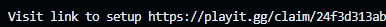
-
Apreta "Continue"

-
Apreta "Add agent"
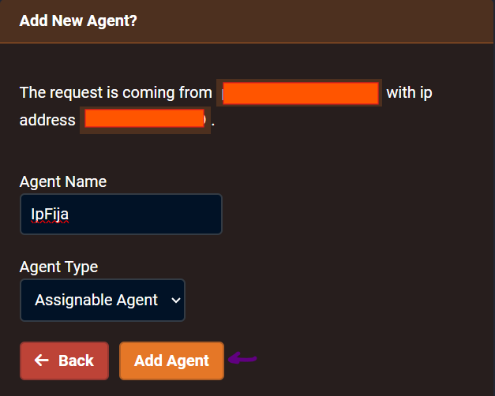
-
Espera 5 segundos y apreta "Create tunnel"
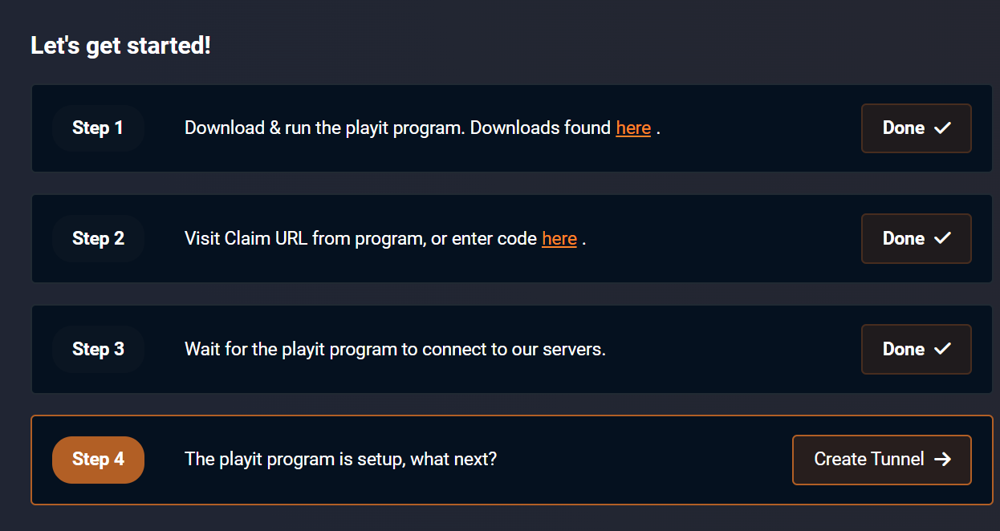
-
Selecciona Minecraft Java en esta ventana y haz click en add tunnel
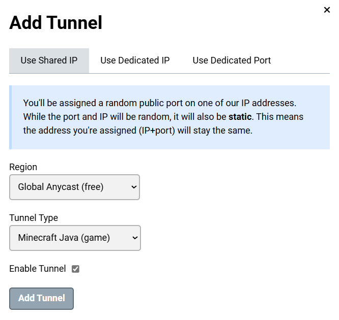
-
Regresa a tu servidor y espera unos momentos hasta que salga algo como esto, luego apreta [Ctrl+C] una sola vez (importante)
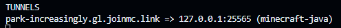
A partir de ahora, no necesitarás hacer los pasos anteriores cada vez que inicies el servidor
-
Ahora, te dará la IP de tu servidor.
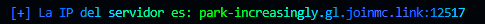
¡Todo listo, tu servidor iniciará, si tienes dudas o necesitas ayuda puedes ir al Discord para recibir soporte!
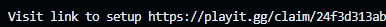
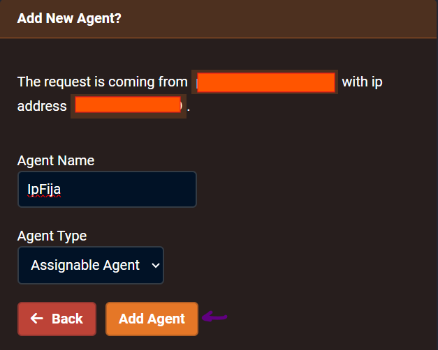
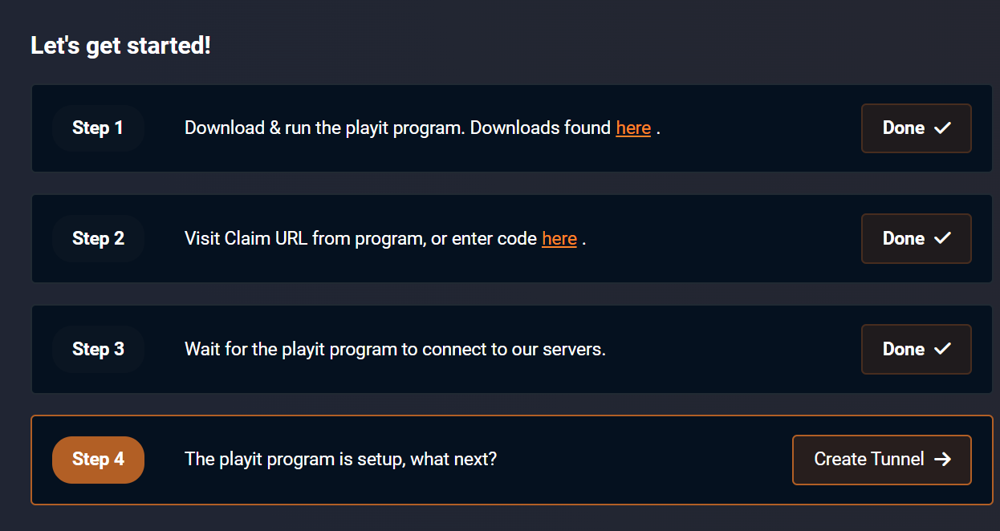
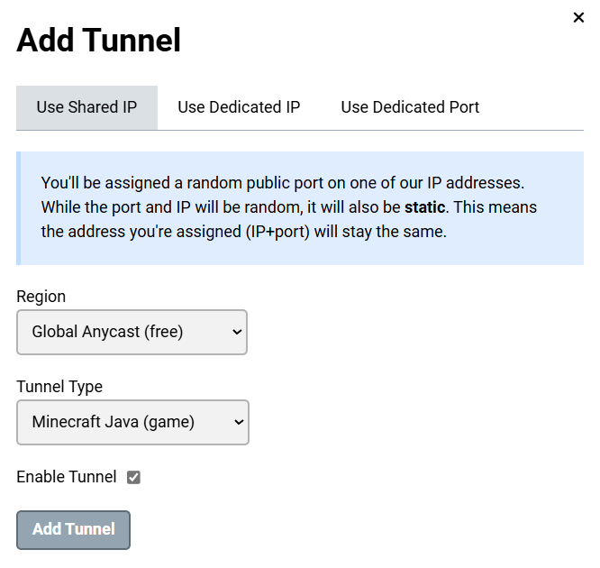
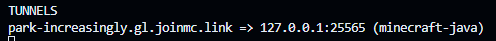
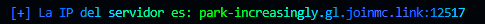